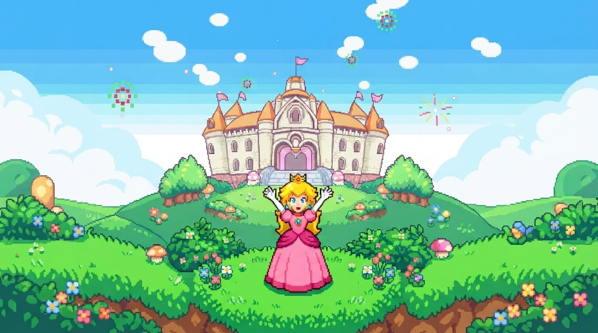

¡Victoria!
¡Lo lograste! Has atravesado el castillo de Bowser, sobrevivido a la lava, esquivado a los Dry Bones y las Plantas Piraña, y elegido el champiñón correcto. ¡La princesa ha sido rescatada! El reino está en paz una vez más.
Jugar de nuevo